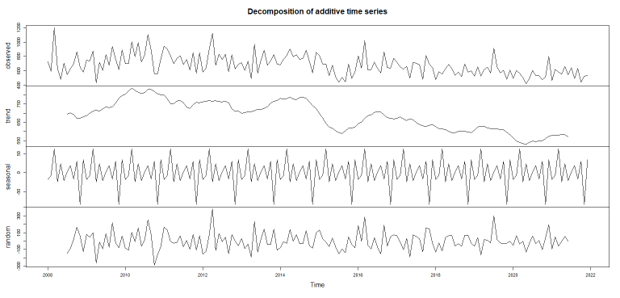
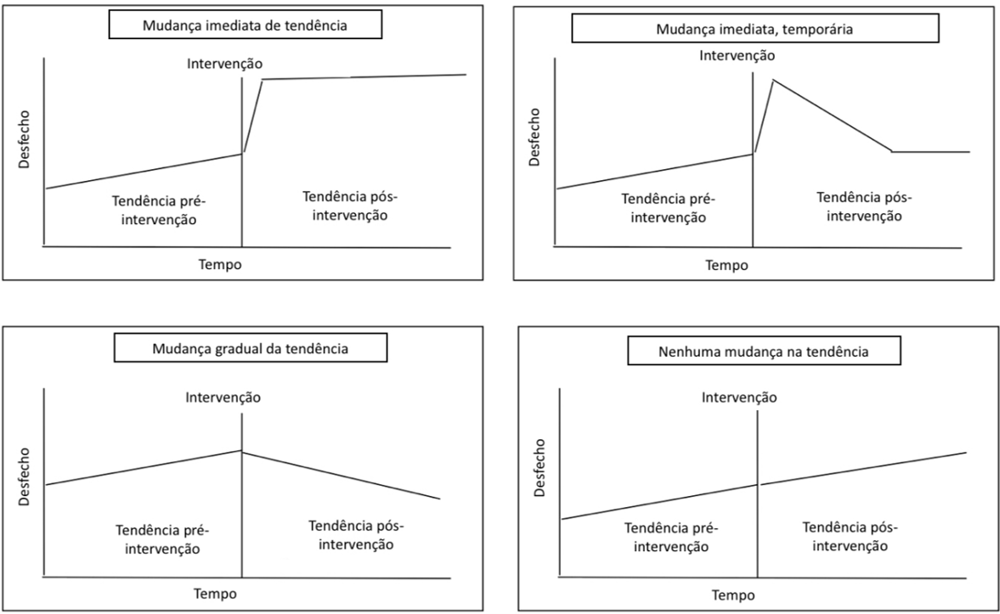

Métodos de comparação
Clique nos tópicos para descobrir mais:
Médias móveis
Previsão de período anterior versus período observado
Geralmente semanal (7 dias)
R e Excel

Diferenças entre proporções
Teste Z para duas proporções (Períodos maiores – anos)
Programa R

Diferenças entre medianas
Teste de tendência Prai-Winsten (mesmo período em anos diferentes).
Programa R, STATA E SPSS

Série temporal: modelo de decomposição
Série estacionária pelo teste de KPSS
Tendência pelo teste de Mann-Kendall ou Cox-Stuart
Sazonalidade pelo teste de Fisher
R e STATA
Série temporal interrompida
Coeficiente de Regressão – Prais Winsten
Programa R e STATA
